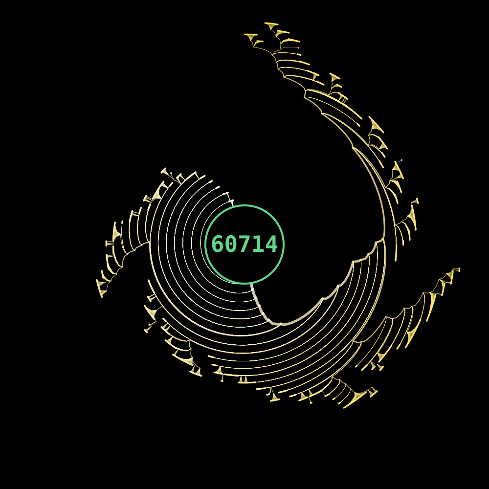

Research
60714
Kaprekar's routine sends every four-digit number to 6174. With the subtraction reordered, every five-digit number lands on 60714.
If the video does not play here, watch it on YouTube.
The rule
- Sort the five digits from biggest to smallest and call them A, B, C, D, E.
- Write two numbers from those letters, ADCBE and DEACB, and subtract.
- Take the positive difference and keep five digits. Leading zeros count, so 714 is written 00714.
- Repeat with the new number.
An example: 58196 → 43713 → 41607 → 60714.
- 58196 sorts to 98651, and 95681 − 51968 = 43713.
- 43713 sorts to 74331, and 73341 − 31734 = 41607.
- 41607 sorts to 76410, and 71460 − 10746 = 60714.
- 60714 sorts to 76410 again, so from here it stays at 60714.
What is true
- Computed All 99,990 five-digit strings that are not a single repeated digit reach 60714, in at most 30 steps. The ten repeats (00000, 11111, ...) go to 0.
- Computed Counting only rules where every digit takes part, there are 33 numbers at five digits that are the single endpoint of some rule. 60714 is the only one that is still the endpoint at six digits. Its digits are those of Kaprekar's 6174 plus a zero.
- Computed Without the sorting step, none of the 7,140 five-digit rules sends every start to one number.
- Computed At seven digits and up, with the rule extended to the longer length, 60714 is still reached by most starts, but a growing share collapses to 0 (about 12% of digit collections at 24 digits).
- Open The general problem: choose an endpoint, get a rule with a proof. No human mathematician has refereed any of this.
- Credit The four-digit result is D. R. Kaprekar's (1949). The family of rules that subtract one arrangement of the sorted digits from another was defined by K. Peterson and H. Pulapaka (2008).

The paper
Read the paper (PDF)
The Digits of 6174 at Every Length: Two Liftings of a Universal Kaprekar Fixed Point. Clay Elmore, November 2026. 26 pages.
Calculator
Try the calculator
Type a number from 5 to 20 digits long and watch each step until it reaches 60714 or 0.
Video
Watch the video
6174 has a five-digit cousin: 60714, on the Arbolinea YouTube channel.
How this was made
The questions and the direction are ours. The computation, the checking, and the drafting were done with AI models, Anthropic's Claude and OpenAI's ChatGPT, used as research tools.